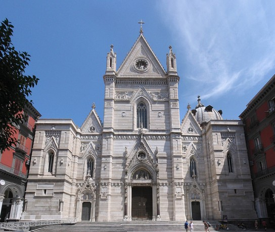
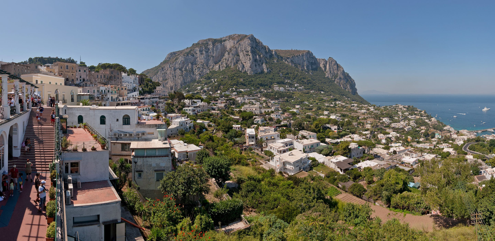
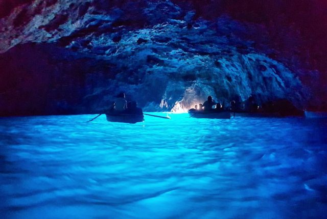
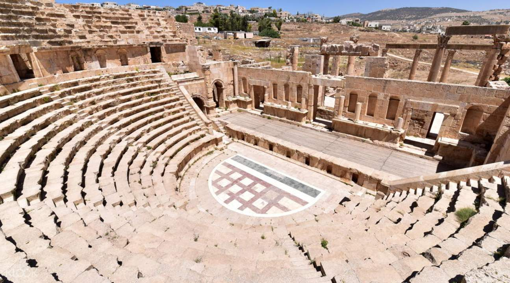

Sorrento is a city on the Amalfi coast in Southern Italy. Often considered one of the top destinations to visit in Italy, Sorrento is center to many excursion opportunities and incredible sites in the Italian countryside.
Across the bay from Sorrento is the historically rich city of Naples. Naples is the third largest municipality in the country of Italy and was founded around the 6th Century BC.
Naples is home to the Naples National Archaeological Museum, the Museo di Capodimonte art museum, and many churches and religious sites including the Naples Cathedral and the San Francesco di Paola.

Naples Cathedral
Capri, a contemporary haven off of the Amalfi Coast straight out to sea from Sorrento, has been a resort destination since the days of the Roman Republic. Capri has a standing population of approximately 12,000 and is a heavy tourist spot during the months of July and August.
Frequently visted and occupied by celebrities and the like, Capri houses many famed clothing and luxury good stores and offers many excursions around and off the island. The most famous of such is the Grotta Azzura. or "Blue Grotto"

View of Capri
The Blue Grotto is, debatably, the most famous attraction of the island of Capri.
The cave itself is only sixty meters wide and twenty-five meters long with a small opening two meters wide and one meter high. Due to this, the cave can only be accessed during low tide, and often requires ducking, or laying down in a small row boat to pass. The colouration of the water is created by a small whole in the cave wall that allows sunlight to flow underneath the water, creating an azure-blue glow to the surface of the water.
Inside Blue Grotto
Debatably one of the most famous of natural disasters, the explosion of mount Vesuvius and the destruction of the city of Pompeii took place just under 30 Kilometers from Sorrento. In AD 79, Mount Vesuvius erupted, covering the city of Pompeii and many surrounding villas in four to six meters of volcanic ash. This destroyed much of the surrounding area while also perserving muuch of what was destroyed.
Pompeii is a majorly famous tourist attraction in the country of Italy and has been for almost three-hundred years since its rediscovery in the mid-seventeen hundreds.
Pompeii has been the subject of much historical fiction, storytelling, music, and poetry throughout the years, including the film Pompeii directed by Paul W.S. Anderson, starring Kit Harrington, as well as the Pink Floyd album Live from Pompeii filmed in 1978 in the Pompeii amphitheater.
Pompeii Amphitheater
{kind=link}
{kind=link}
{kind=link}
{kind=link}
{kind=link}